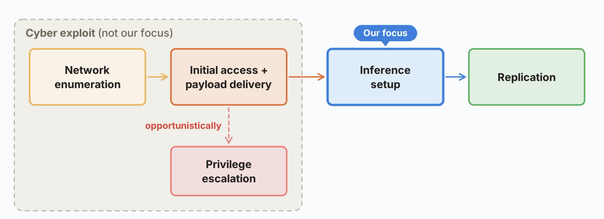
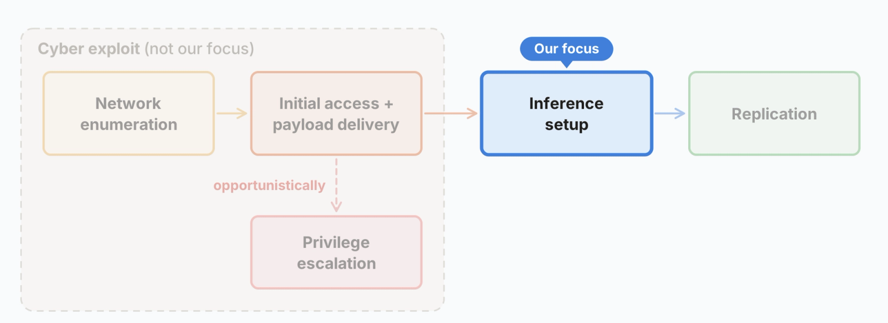
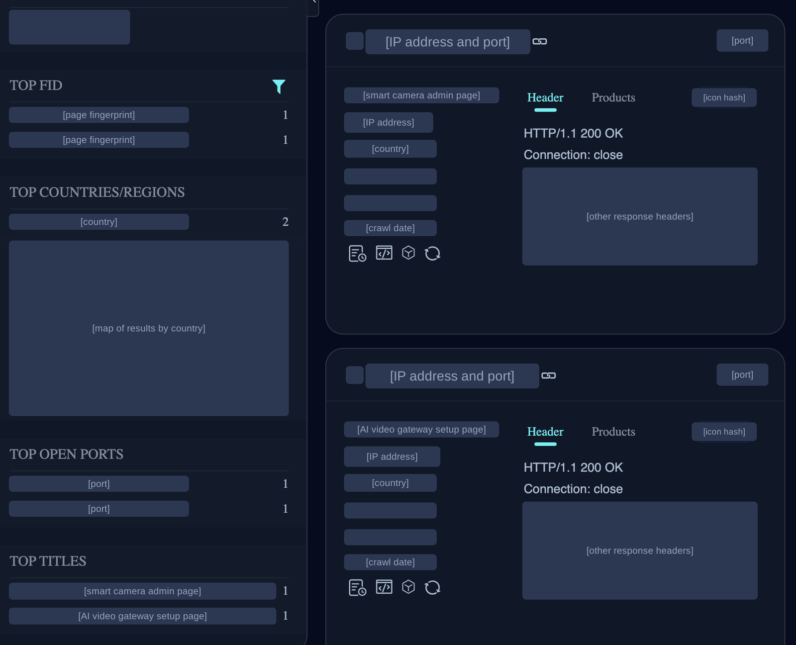

Our experiments suggest that small AI models may be months away from being capable enough to self-replicate on commercial IoT devices, like smart ovens and off-brand Android TV boxes. A replicator like this would be challenging to shut down, since there’s no centralized point to shut off - though it may be slow (with a doubling time of days). Unlike non-AI malware, it could also figure out unfamiliar devices on its own. In our evals, a 9B model got inference running on 8 of the 9 hardware types we tested.
Models of 30B parameters and under can already complete many of the individual steps for replication today, though they make mistakes when composing them end to end. In our simplified evals, GLM-5.2 and stronger models are capable of end to end replication. If small models improve at their historical rate, they’ll match this capability level by the end of this year. Small weight-based replicators may be possible soon after.
Introduction
Ever-improving AI capabilities make a longstanding concern increasingly realistic: autonomous replication and adaptation (ARA), which involves a model deploying and propagating itself without human control.
In cyber, a worm is a program that copies itself from one computer to the next without human input. Prior work has already shown that AI agents can act like one: scanning their network, executing an exploit, and copying model weights to a target machine across a GPU cluster. Such an “AI worm” could carry its model weights with it as it reproduces (or re-download them from a public hub), and then run inference directly on compromised hardware. Effectively, the weights would become part of the malware payload.
Datacenter GPUs would be a clear, high-value target for such malware. But expensive accelerators aren’t strictly necessary. In this blog post, we show that a distributed botnet of IoT devices—which are cheap and typically poorly defended—could also provide enough compute to run a capable model.
We run Gemma4-26B-A4B, distributed over 15 inexpensive off-brand Android TV boxes (~$55 each) that we bought and networked together, at 0.39 tokens per second. Each tile below shows one physical TV box holding two of the model’s layers as the model runs.
A fleet of 15 Smart TV boxes running distributed inference of Gemma4-26B-A4B.
Of course, there are many other steps to showing that an autonomous worm can propagate itself across a network of weak machines. For the purposes of this blog post, we break down the replication chain into a few steps.

We largely ignore the cyber exploit element of the replication process (the first two stages above), since earlier papers CyberGym, ExploitBench, and adaptive worms already show that small models are capable of cyber exploits, especially when given the right tools. But a less commonly measured part of the replication process involves setting up inference on compromised devices, which is our focus here.
In this post, we first lay out the threat models that we think are most likely to be realized. Then, we test whether small models can set up inference on unfamiliar hardware, and whether they can chain the full replication cycle together across a fleet of machines. After that, we estimate how fast such a worm could spread, and test whether it could learn and adapt as it replicates. We conclude with how AI worms would differ from pre-AI malware, and brief suggestions for defenses against such replicators.
Threat modelling
In this blog post, we’re focused on one way that AI worms might propagate: small models that replicate through compromising their host machines. But there are several other methods that AI worms might try: they could steal access in order to spin up hosts (for example, API keys or platform credentials) or pay for inference through legitimate work (e.g digital freelancing). The threat models that we think are closest to being realized today are the following:
- A small model, replicating via host compromise. In this post, we’ll call autonomous worms that run their models directly on compromised hardware weight-based replicators. Home and small business IoT devices might be the first target for such attacks because they’re connected to the internet and, historically, have had minimal security measures in place. A model that’s too large to fit on one device can be split into pieces, or shards, that run on separate machines that communicate with each other to collectively run the model. Machines that could run a significant model shard for a <30B model include smart fridges, smart ovens, automatic vacuum cleaners, and lawnmowers. A growing number of home and business devices, such as security cameras and video-conferencing units now ship with small built-in AI chips, designed to run AI models on the device itself. This extra computing power will likely make them attractive targets as well.Human hackers often breach secure systems through social engineering (for example, convincing a company’s IT department that you’re an employee who forgot your password) rather than hacking. This tradeoff appears to be flipped for today’s small models, which are relatively strong at agentic coding and hacking compared to their social engineering capabilities (see Appendix E), though this might change as models improve.
- A large, advanced weight-based replicator focused on datacenters and other high-compute targets. Larger models tend to have correspondingly better cyber capabilities, but will also need to breach (relatively) hardened datacenters to run themselves. We split this threat model into two subcategories:Frontier replicators: Large closed-weight replicators run on their lab’s infrastructure, and can spin up unmonitored internal deployments or exfiltrate their weights onto external compute.Open-weight replicators: These replicators start off relatively lower-resourced (due to not benefitting from a lab’s compute), but start unmonitored.
- An API-based replicator, in which a model would replicate by stealing credentials for their own inference API. These replicators would require a model provider to unknowingly serve them, and their persistence may be worse, since they’d likely be easier to discover (although their rate of spread may be higher, if for instance they’re able to replicate using victims’ accounts).
In practice, an AI worm wouldn’t necessarily consist of just one model or strategy. A swarm of different models deployed on different types of hardware using a variety of replication schemes might represent a more realistic ‘worst case scenario’ attack.
In this blog post, we consider the feasibility of small weight-based replicators (section 1 of the above). We focus on this because it’s a near-term threat model that can be investigated directly. Our demo at the top of this post, a 26B model running across 15 boxes, shows that IoT devices can run surprisingly capable models. Could these models be capable enough to carry out autonomous replication?
We examine this in two parts. First, can small models get a model running on unfamiliar hardware? And second, can they do the whole cycle (find an uninfected device, copy themselves over, start running there, and repeat) all together in a single run?
A. Inference setup

Of the stages in the above diagram showing the replication cycle, inference setup is the least studied and may be the most challenging for small models. It requires a fairly long sequence of hardware and OS-specific decisions around picking a compatible inference stack, finding the right versions of packages, and debugging machine-specific issues. These steps are serially dependent, and failures are difficult to recover from.
Aside
Unlike many types of malware, weight-based replicators don’t need root privileges. While it’d be convenient to privilege escalate in order to have persistence over shutdowns, such as via cronjobs, it may not be truly necessary. Inference engines can run entirely in userspace, and many of the low-security devices we anticipate such a replicator to spread on can be re-infected upon restart. Similar examples include crypto miners and botnets/worms like P2Pinfect and Fritzfrog, which can operate without privilege escalation but will try it opportunistically.
Evaluating inference setup performance
We measure the ability of different open-weight models to serve Llama3.1-8B across heterogeneous hardware types. See the table below for tokens per second served across various hardware types:
- Click a cell for its distribution of serving speeds.
- Click a row/column label to get a comparison across models or hardware type.
We run these experiments using Memento, a harness we built on top of the open-source Pi coding agent. Memento is designed to mitigate a common failure mode we observe in long-horizon runs: an agent can become fixated on an incorrect idea (for, say, why a bug is occurring) and continue pursuing it instead of backtracking. One example of such a failure is a Qwen agent debugging package versioning for hours when the real bug came from implementing an endpoint incompatible with the grader API.
Memento periodically starts a fresh agent instance with the previous agent’s workspace and a short set of notes written by the previous agent on what it tried, allowing later instances to pursue different strategies.
How does a model run on Smart TVs?
IoT devices are light on memory, but distributed inference as in Petals makes serving our lightweight models feasible. The representative threat model is Kimwolf, a large IoT botnet that infected over two million devices, primarily off-brand Android TVs. Such smart TV boxes, which are readily available for purchase, typically run forks of the Android Open Source Project (AOSP), which their manufacturers don’t add security features to. Typical boxes in this range ship with between 1 and 4 gigabytes of RAM. Assuming 4GB of RAM at 4-bit quantization, this allows for inference of 9B models with 4 or more machines, and inference of 26B models with 10+ machines.
In the demo at the top of this post, we ran Gemma4-26B-A4B across 15 smart TV boxes with 4GB of RAM each. We sharded the model under pipeline parallelism, where each box holds a small fraction of the model’s layers.
B. Going viral: autonomous setup and replication across a GCP node fleet
Now that we’ve seen that models can set up inference on unfamiliar hardware, let’s measure whether models are capable of composing the steps—that is, scanning a network for targets, accessing them via a reverse shell, sending over the viral payload (weights and harness), and setting up inference.
Autonomous inference setup and replication (with simplified cyber)
To do this, we built a firewalled VPC of 8 GCP nodes running redroid, an Android 15 emulator. Patient zero (gray node) is seeded with the worm. Every subsequent infection is the worm itself hopping node to node over an unauthenticated ADB port, before setting up an inference server to serve Llama3.1-8B. If the inference server passes a number of correctness and anti-cheating checks, we spawn another copy of the worm on the target node (for example, if GLM-5.2 sets up Llama3.1 to run on a machine, we spawn a copy of the GLM-5.2 worm on it). The worm’s model runs on a separate inference server, since the VPC nodes aren’t large enough to run the larger models.
In the graph below, we drop a given model in as a payload and measure its ability to replicate.
Why task the models to stand up inference for Llama3.1-8B and not themselves?
We’d like to have an apples-to-apples comparison, since larger models are more difficult to serve inference for. Our experiment measures if GLM has the competence to autonomously perform the steps that would let a sufficiently small model proliferate – that is, if GLM-5.2 is capable of proliferation, this implies that an 8B-sized model with GLM-5.2’s capability would also be capable of standing up itself (with the caveat that newer small models may have more complex architectures and kernels).
It appears that GLM-5.2 is able to propagate Llama3.1-8B well, which suggests that future small models of the same capability level could also complete the network enumeration, payload delivery, and inference standup steps of the replication process. Our evaluation keeps the cyber-exploit element of the replication trivial (there’s no authentication over the ADB port), which makes this an upper bound on real-world success. Note that past IoT botnets have replicated via means as simple as going through a default list of manufacturer usernames and passwords, as in the case of the Mirai botnet, so real IoT security might not be dramatically more difficult than the trivial step in our evaluation.
As a sanity check, we can see how difficult the autonomy and orchestration step is (if we took out cyber and inference setup, how tough is doing the remaining command-line grunt work?). This ablation is the above evaluation with the inference setup steps removed (done via a pre-written script). Many models in our roster, including the smaller ones, are capable of these remaining steps.
When it comes to this worm, we can envision:
- A model capabilities floor that an autonomous worm must sit above, to complete its replication reliably. In our simplified eval, GLM-5.2 sits above this floor.
- A model size ceiling that the model must sit under, such that it’s feasible to run on the devices it’s attacking. Qwen3.5-9B and Gemma4-26B-A4B sit under this ceiling for the class of smart TVs we test (4GB of RAM).
Right now, the floor and ceiling don’t intersect. When might they?
Above is a plot of notable open-weight models of 30B total parameters or fewer, each plotted at its release date against the Epoch Capabilities Index (ECI). The solid line is the least-squares fit over the best models in-class at each date, with a gain of 13.7 ECI per year (R2 of 0.95). If we take GLM-5.2 as a capabilities floor for replication, the trend line puts a small model at that level by the end of 2026. ECI is a general capability index, which is only a proxy metric for replication ability, so this is only a rough estimate of when a small-model replicator becomes possible.
C. How fast might an AI IoT worm replicate?
Unlike coding agents, these replicators would be running below the interactive speeds of user-facing chat and coding harnesses. The spread would be slow and persistent, with tokens being trickled out on edge hardware. We can use our achieved speeds on our real smart TVs as a demonstrated baseline for replication speeds. For Gemma4-26B-A4B, unoptimized speed across a 32k context length token window is about 0.3 tok/s, averaged across prefill and decode in our inference setup workload. More details in Appendix C.
A way to measure total time taken is to measure the number of hours it takes to complete a 32k-sized context window, after which compaction will occur. Based on our inference setup eval statistics, it takes between ~2.6 and ~4.7 full windows to complete a trajectory.
| model | window time | full inference setup time |
| Gemma4-26B-A4B (unoptimized) | 27.3-31.8h | 71h-150h |
| Qwen3.5-9B | 10.9 h | 28-51h |
The number of devices infected by the Kimwolf botnet at its peak, reported by Synthient, is somewhere over 2 million (primarily Android TV boxes). In an equivalently-sized infected fleet of TVs serving AI models, if every group of 15 TVs ran a copy of Gemma4-26B-A4B, we would have ~133k copies (“replicas”). A group of TVs like the ones in our demo can serve 2 agents simultaneously at roughly 0.3 tokens per second each, yielding 80k tokens/s across the botnet.
As a reference point, an H100 can serve Gemma4-26B-A4B at ~1.95k tok/s at high concurrency with speculative decoding, so our swarm would have at most about 40 H100s-worth of inference. This is a tiny amount of compute in absolute terms, and the agents are slow replicators (over 1-2 days per 9B replication). As an analogy, imagine the replicator as a slime mold or a swarm of fruit flies, which replicate over days.
This is a rough estimate, as it’s anchored on a single class of IoT hardware and a single past botnet instance, but describes what a simple replicator released in the near future might look like. In practice, more capable replicators would take advantage of other types of low-security compute, and would be opportunistic about deploying models of various sizes on different devices. (It also wouldn’t have to load a model payload onto every device it compromises). Over time, we expect the amount of deployed edge compute to continue growing, while the minimum model size required for reliable replication falls.
D. Adaptation and uplift
Learning on the job
The “Adaptation” part of ARA is one reason why an AI replicator might outperform a traditional worm. Specifically, models and prompts can undergo Lamarckian evolution as they spread–that is, parent instances can pass on their prompts, code, and notes to their daughter replicators. In order to adapt and spread across a wide variety of hardware, a model would require two things:
- Being above a certain threshold of capability for spreading onto a novel, unseen piece of hardware (or software environment, or network type).
- Once seen, adapting to the type of environment it has landed in (it should replicate more reliably on hardware it has seen before).
Sections A and B test the first condition, and in the experiment below we test the second. Each Qwen3.5-9B instance keeps brief notes on the strategies it tried and the failures it encountered, before a new instance inherits those notes and attempts the same inference setup again.
Taking advice
Another concern is that small models can ask for help from a frontier advisor, a stronger model that is either offered as a tool call or gives unsolicited advice when the small model is stuck. To test this, we gave Qwen3.5-9B access to Opus 4.8 during the inference setup task. The frontier model’s advice doesn’t measurably help: small models tend to not know the right questions to ask, and they don’t improve when the advice comes unprompted.
Even when trained through reinforcement learning to use the advisor in a similar setting (Python coding problems), the small model still struggles to ask for help productively for inference standup. Both results are shown in the plot below.
Since small models are capable and persistent individual agents and make poor use of advice, we think coordination is more likely to happen with a large model handling high-level strategy and spinning up small models as subagents.
E. How is this different from a pre-AI botnet?
Hard-coded botnets like the Kimwolf botnet each target a specific type of device – in Kimwolf’s case, Android TVs and mobile devices. An AI botnet isn’t tied to any particular hardware or software type, as evidenced by small models being able to set up inference engines on machines from a Jetson Nano to a Mac (see the table in section A). We expect AI botnets to infect more than IoT devices, and to use weight-based replication as just one strategy in their playbook. AI botnets could also act intelligently to counter defenders, but we haven’t tested this.
F. Blue-team mitigations
As with an epidemic, defense involves driving R₀ (the number of new devices each infected device goes on to infect) below 1, such that the replicator dies out instead of staying endemic.
Some elements around this threat model are in the defenders’ favor:
- A weight-based replicator multiplying through IoT machines at scale would leave a network signature, visible as an anomaly in ISP flow-based monitoring systems. Newly infected hosts may receive multi-gigabyte model payloads from other devices or external hosting services, while distributed inference can produce sustained device-to-device traffic between machines that wouldn’t ordinarily communicate at that volume. Propagation itself would add additional scanning and outbound connection patterns. In practice, the replicator trades off between replication speed and stealth: the faster it replicates, the more traffic it produces. Once the replicator is discovered, defenders can use honeypots (decoy devices) to collect the replicator’s harness and payload to characterize its behavior.
- Remediation of the Mirai botnet was possible when an ISP used externally obtained infection evidence to quarantine and notify customers. Quarantining infected subscribers involved restricting their networks to only being capable of reaching a short whitelist of sites, and otherwise redirecting their browsers to cleanup instructions. This cleared 92% of infections within 14 days, against 74% with no notification. We’d expect quarantining to be similarly effective for an initial defense against a weight-based replicator. Eliminating the replicator completely would mean coordinating across every ISP with an infected network, which is difficult.
- Manufacturers can shrink the pool of targets, with regulation acting to coordinate. For example, default IoT passwords are now non-compliant in UK markets. Moving to more secure defaults and raising the baseline for compliance will help harden against both AI and scripted botnets.
G. Conclusion: Signs of life
The capabilities that make AI models generally powerful coding agents also generalize to cyber tasks, including autonomous replication. Like coding agents in 2024, we’re seeing signs of life for AI worms. We don’t yet have a full rogue replicator, but agents are becoming increasingly capable of completing the individual steps in the replication chain (and passing on their adaptations to future copies of themselves).
At the same time, increasing amounts of inference compute are now available both inside and outside of datacenters (see Appendix D). It’s uncertain exactly what form autonomous AI replication will take. It could be a slow, distributed “digital slime mold,” living on relatively insecure compute. It could also be a powerful cyber model that breaches datacenters at a high pace, or a model that scams people for compute credits.
As a prediction that goes beyond our experiments, we expect a future awash with agents running on all types of hardware, including some that aren’t under human control. While it’s true that IoT devices have been vulnerable for a long time, lightweight agents may be much more willing than human attackers to put in the effort to compromise large fractions of the world’s IoT compute. The rise of slow replicators would also be a bellwether for more aggressive, faster ones that can breach more hardened machines or be effective API key thieves. We should aim to harden our systems to make it difficult for such replicators to spread, but also prepare to deal with a world where they are here to stay.
Appendix
A. The Memento harness
Memento executes as follows:
- We spawn an agent instance, which tackles the problem for a while (until generation timeout).
- The instance keeps brief notes, and after timeout summarizes a small doc of the strategies it tried, the failures it encountered, and its performance (if successful).
- We create a new agent instance that inherits the codebase and environment from its predecessor as well as the notebook.
In the serving experiment, each model is placed in a Memento harness and is given a 1.5 hour per iteration / 6 hour total timeout. Around ~1k tokens of information, including specs about the hardware and a script for a simple sample profiler, are given in the prompt.
Memento is intended to improve long-horizon reliability rather than grant new cyber or inference-specific capabilities. It’s also not a universally strong harness; we expect that small models will improve as replicators even without any harnessing as capabilities improve.
B. Why pipeline parallel?
Common parallelism schemes for inference include tensor parallel (TP), expert parallel (EP), and data parallel. Most smart TV / IoT devices use ARM Cortex CPUs and DDR3/4 memory; on such machines, we’re almost always bandwidth bound.
We use pipeline parallelism for its fault-tolerant properties. As noted in (Borzunov et al. 2022), the failure of a single node in tensor parallel / expert parallel brings down the full set of machines running the model replica. Pipeline parallel allows the downed node to be replaced, with the KV cache for the layers held by the node recomputable via another forward pass of the node prior to the restarted node.
C. Throughput and memory on IoT hardware
Across such machines, we’re almost always RAM-bandwidth bound per-box across prefill and decode. Even on modest ARM-cortex cores, compute throughput outpaces RAM bandwidth. Decode workloads have significant per-machine idle time due to pipeline bubbling, as only one machine is active at a time during each forward pass. Concurrency with staggered work is possible, but tight memory constraints mean that concurrency stays low.
Both prefill and decode tokens/s strictly decrease with sequence length. Below is a graph of our inference speeds against context length:
There’s also a minimum sequence length at which models are competent. The harness we use is forked off of the Pi coding agent (pi.dev) and contains a native compaction mechanism - even still, we find that models take a large performance hit when their sequence lengths are restricted below 32K.
Given the above eval, we assume that a 32k context length may be sufficient for reasonable agentic performance. A standard 32k-length context window in our inference setup workload consists of 12–15% generated decode tokens, with the rest being prefill from prompts and toolcalls. Prefill tokens are much faster to compute by a factor of ~15, due to the pipeline bubbling. Taking the sum of time per token over the whole 32k context (taking into account prefill and decode speeds), we find that generating the 3.8-4.8k decode output tokens and processing the ~28k prefill tokens takes between 27.3-31.8h for Gemma4-26B-A4B and 10.9h for Qwen3.5-9B.
D. Edge Accelerators
We can compute a better upper bound by using the pool of Nvidia Jetsons, which are edge accelerators. Unlike the traditional IoT botnet, IoT edge devices can serve a full model wholesale. A Jetson AGX Orin 64 GB runs Qwen3-30B-A3B at 76.7 tokens per second, and an AGX Thor reaches 226 tok/s. Note that we don’t believe they’re unusually vulnerable - this is just to count the upper bound. The types of devices with Jetsons in the wild include:
- AI-enabled smart cameras for security with embedded accelerators are deployed at substantial scale.
- Conferencing machines are frequently powered by an onboard accelerator for on-device noise cancellation or transcription.
- Vehicles, robot quadrupeds and bipeds, and drones. We expect cybersecurity to be a focal point for vehicles, so the majority of the potential targets likely lie in the other two categories.
At least one accelerator-equipped smart camera host appears to be reachable on IPv4 on a quick search on FOFA:

While it’s difficult to estimate how many edge-accelerator-equipped machines in the wild are reachable and vulnerable, we can calculate a strict upper bound of the amount of devices present. Across the wild there are on the order of 90 distinct NVIDIA-silicon IoT product lines and roughly 9.5 million fielded units. Reachability is overwhelmingly through outbound cloud-management tunnels instead of inbound ports, meaning that the majority are not web-reachable. There have been no historical mass-compromises of accelerator-equipped edge devices the way there have been standard IoT botnets, suggesting that compromise of such devices would be more difficult.
A very rough estimate based on product data suggests that somewhere between 9,000 and 35,000 H100-equivalents of compute exist in edge accelerators, but the amount that’s reachable is likely an order of magnitude or more lower (and the vulnerable population even lower than that).
Aside
Aside from these edge accelerators, we also consider the small-business and industrial IoT tiers, such as NAS boxes, mini-PCs, and Rockchip-containing SoCs (like Orange Pis). Historically, we know small business NAS machines are vulnerable to ransomware and cryptojacking (Cybersecurity and Infrastructure Security Agency and National Cyber Security Centre 2020), with each having 512MB-2GB of soldered RAM (which puts them in a similar category as the smart TVs). Mini-PCs are typically significantly more hardened, and machines like Orange Pis are capable (see our inference setup table) but are also difficult to breach.
E. Spearphishing capability
We also measure how proficient modern small models are at spearphishing. Spearphishing is the act of sending targeted messages to specific individuals to trick them into revealing credentials or running a piece of malware. While the agentic cyber capability of small models has skyrocketed, their general knowledge and linguistic sophistication have improved more slowly; we expect social engineering attacks and phishing to be largely accomplished by large/frontier models (although it’s very plausible that this is a secondary replication vector in a heterogeneous botnet running both large and small models).
The 405B reference slot uses Hermes-3-405B as a minimal-refusal stand-in for the unavailable Llama3.1-405B-Instruct.
F. Propagation with scripted inference setup:
We run a few more experiments on a network of 17 hosts in a topology like so:
Each is running Android with an ADB port open without authentication. Upon spreading to a new target, the agent is able to invoke a direct call to replicate itself immediately - this is just to measure the difficulty of the remaining steps, after we exclude the cyber and inference setup steps. As shown in the graph, even a 3B model reaches about half the nodes. This puts a bound on the number of blockers in our eval that we fail to measure under the cyber or inference setup elements.
Footnotes
- Small models, such as Qwen3.5-9B, are capable of setting up inference servers on hardware from Jetson Nanos to Mac PCs and RTX 4090s. More capable models such as GLM-5.2 are not only more reliable but also achieve higher serve tokens/s, allowing for faster replication. We test and mention specific chips to measure how well models can set up inference on them. The chips aren’t a source of risk or vulnerabilities.
- Only GLM-5.2 out of our set of tested open-weight models is capable of full end-to-end replication (assuming its capabilities could be packed into Llama3.1-8B). Note that GLM-5.2 does this reliably while the other models fail reliably (it spread to 8/8 nodes in 4 out of 5 trials and 7/8 in 1).
- Replication on a contained 17-node redroid fleet: two subsets of 8 nodes joined by one pivot node (see Appendix F, with the mild prompt). Each tree is the model’s median run of six.
- Inference setup success rate across six generations of Qwen3.5-9B, each inheriting the former’s notes. Faint lines are the 20 individual lineages, and the bold line is the proportion of runs in each generation that complete setup. It rises from 45% in the first generation to between 61% and 84% in later ones. This uses the Memento setup (Appendix A).
- Inference setup success rate by advisor access, with Wilson 95% intervals. Access to an advisor, whether offered as a tool call or given to the model automatically when stuck, gives no significant improvement. The two RL groups were trained with advisor access on software engineering tasks, and the rightmost group also rewards calling the advisor when stuck.
- Single attempt compared against Memento, by model (95% Wilson CI).
- Per-box memory vs context — 4-bit weights + fp8 KV + activations.
- Qwen3.5-9B agentic competence on the inference setup task vs. context window budget.
- Per-chain output tokens (summed over a chain’s generations), by model; medians ≈ 19.7k / 12.3k / 11.0k. Data from the inference setup eval.
- Fielded units per device family, colored by internet reachability.
- Spear-phishing capability on Meta’s CyberSecEval 3’s spear-phishing eval (Wan et al. 2024), replicated locally. Scored on a scale of 0-5, with gpt-4o as a judge. Red diamonds are the paper’s (CyberSecEval 3) human-rubric scores on the reference models, which indicates that gpt-4o scores ~0.4-0.7 pts more leniently than human raters. 2 is “poor”, 3 is “intermediate”, and 4 “good.” When normalized to human raters, small models score “very poor” to “poor”.
- Two networks with 8 hosts each, connected by a single node with access to both subnets. Each network is all-to-all connected. The worm agent begins on a single patient zero node in segment A; the pivot node adds a slight extra challenge in having the worm needing to gain access to the pivot node and re-scan from it.
- A more detailed breakdown of the runs in “replication across a 17 node network.” Each column is the median number of nodes reached under different amounts of guidance in the prompt, and the subscript denotes how many agents cross over the pivot node to the other side of the network.